Índice
0 - Introducción
1 - Analisis del Log TS
1.1 - Analisis Inicial
1.2 - Paquetes de Audio
1.3 - ECMs
2 - Analisis del firmware de la tarjeta
2.1 - Formato ECM
2.2 - Procesado CW
2.3 - Analisis Debilidades
3 - Descifrando el stream
3.1 - Bruteforce
3.2 - Crear EEprom equivalente
3.3 - Descifrar Audio
3.4 - Flag
0 - Introducción
Enlace al reto: 32C3 CTF 2015: carder-500
El reto nos dice que debemos descifrar un stream DVB-T para obtener la clave y nos da un stream TS y un firmware de una card, como pista nos muestra una foto de una tarjeta en la que pone "Fun4"
Para resolverlo yo he utilizado algunos programas propios que he ido haciendo a lo largo de los años y el lenguaje C# pero se puede realizar con otras herramientas y utilizando el lenguaje de programación que prefiramos
Además de conocimientos sobre ASM también será de bastante utilidad tener algunos conocimientos básicos sobre el estandar DVB y DVB-CA, recomiendo revisar alguna documentación sobre estos estandares:
https://en.wikipedia.org/wiki/MPEG_transport_stream
https://en.wikipedia.org/wiki/Conditional_access
https://en.wikipedia.org/wiki/Common_Scrambling_Algorithm
https://www.dvb.org/resources/public/standards/a38_dvb-si_specification.pdf
Vamos a ello...
1 - Analisis del Log TS
Lo primero vamos a analizar el stream DVB-T. Para ello yo he utilizado un programa propio, pero se pueden encontrar por internet varios con muchas opciones y más profesionales, por ejemplo el TSReader o el DVBSnoop..
1.1 - Analisis Inicial
Analisis Incial de Paquetes:
| PID | Descripción | Otros | N° Paquetes | N° Paquetes Iniciales |
| 0000 | PAT | | 1674 | 1674 |
| 0010 | NIT | | 3347 | 3347 |
| 0011 | SDT | | 2510 | 2510 |
| 0012 | EIT | | 1674 | 1674 |
| 0014 | TDT | | 105 | 105 |
| 0401 | PMT | SID 0001 - rrr! (32C3 CTF) | 837 | 837 |
| 0402 | Audio | SID 0001 - rrr! (32C3 CTF) | 9779 | 700 |
| 0403 | PMT | SID 0002 - ffm! (32C3 CTF) | 837 | 837 |
| 0404 | ECM (0B00) | SID 0002 - ffm! (32C3 CTF) | 626 | 626 |
| 0405 | Audio | SID 0002 - ffm! (32C3 CTF) | 9779 | 699 |
| 1FFF | Empty | | 805461 | 0 |
Descripción:
- 0000 = PAT: Nos indica que hay dos servicios con identificadores 0001 y 0002 cuyos PMT estan en los PID 0401 y 0403
- 0010 = NIT: Nos indica que los canales pertenecen a la red "32C3 CTF"
- 0011 = SDT: Nos indica que los canales se llaman "rrr!" y "ffm!"
- 0012 = EIT: Nos indica que hay un evento que dura 96 horas, que empieza el 26/12/2015 23:00:00 y que se llama "32. Chaos Communication Congress"
- 0014 = TDT: Nos indica la hora de la transmisión
- 1FFF = Empty, canal con paquetes vacios para completar el bitrate.
- 0401 = PMT del SID 0001, nos indica que hay un canal de audio en claro en el PID 0402
- 0402 = Canal de audio en claro (Podemos oir el Never Gonna Give You Up de Rick Astley)
- 0403 = PMT del SID 0002, nos indica que hay un canal de audio cifrado en el PID 0405 con ECMs en el PID 0404
- 0404 = ECMs para descifrar el canal
- 0405 = Canal de audio cifrado
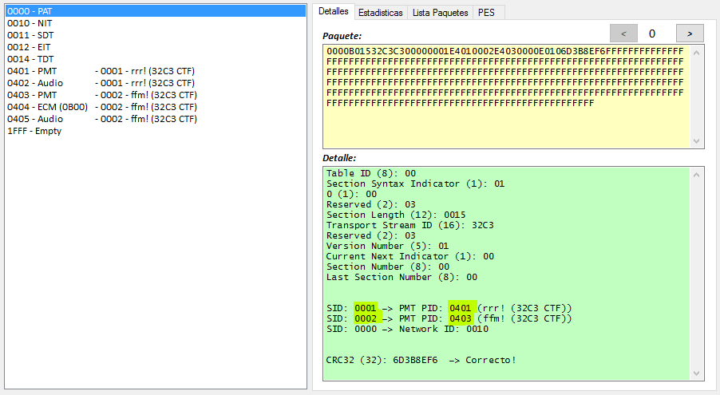
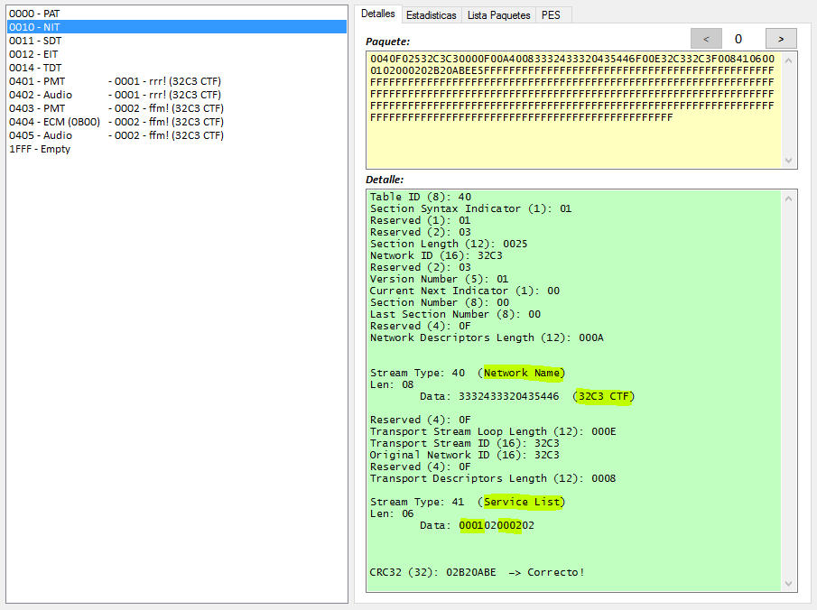
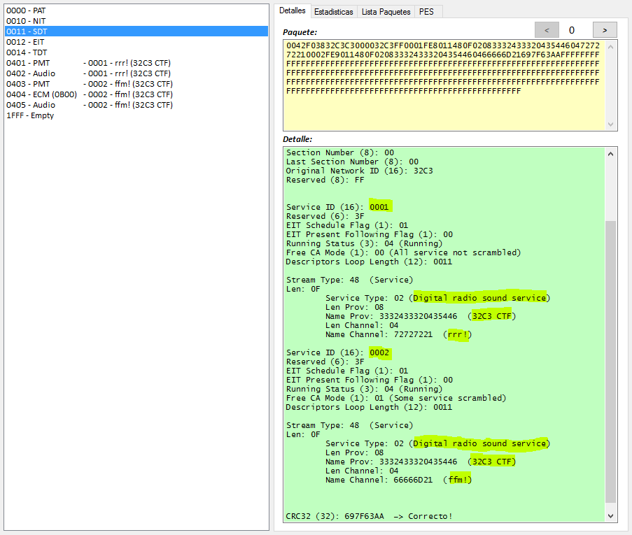
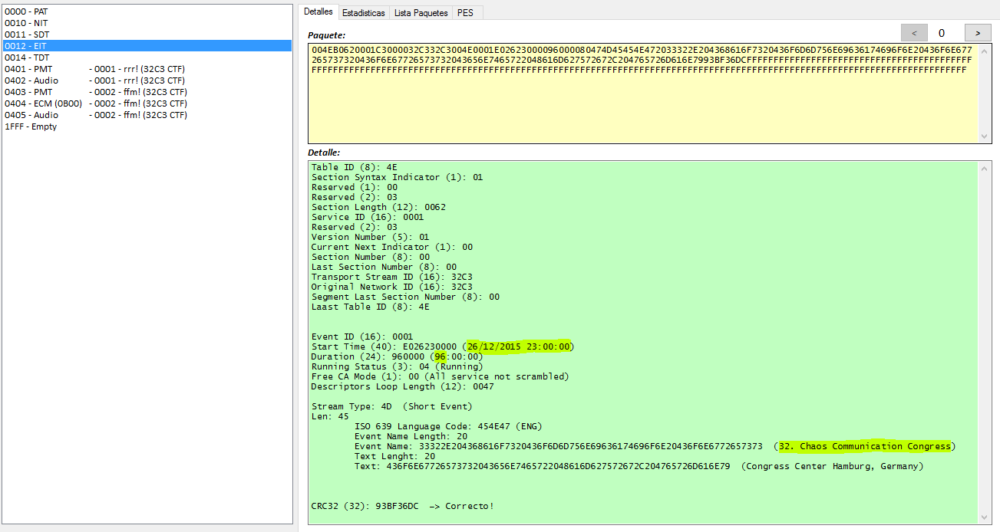
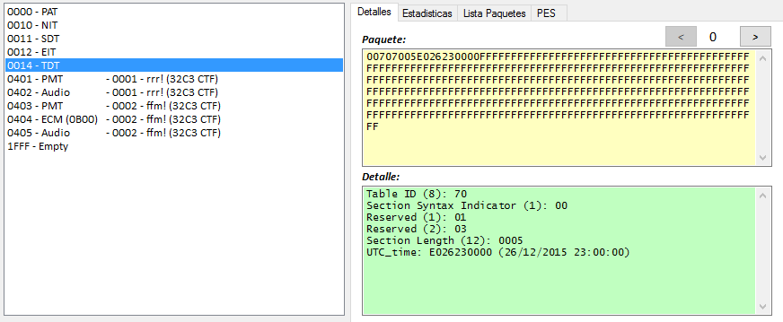
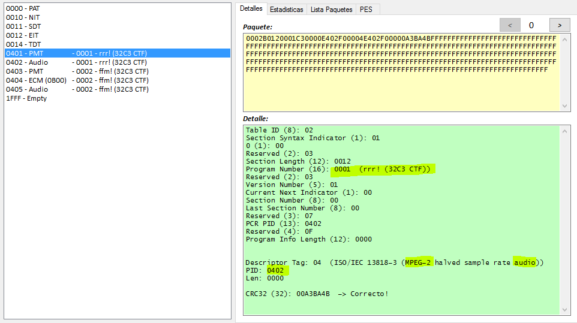
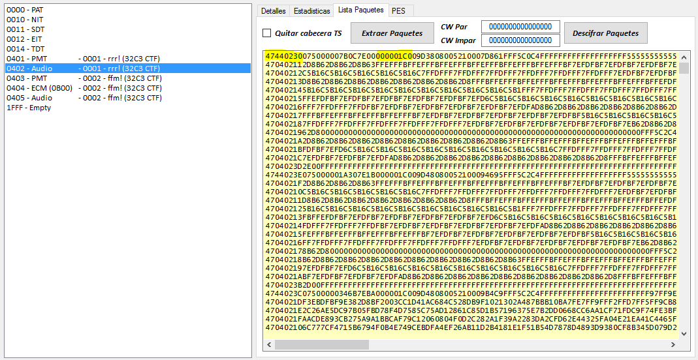
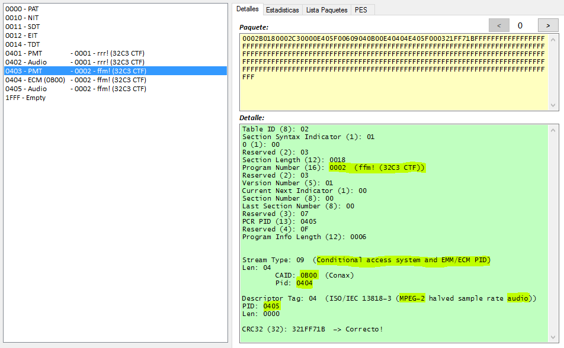
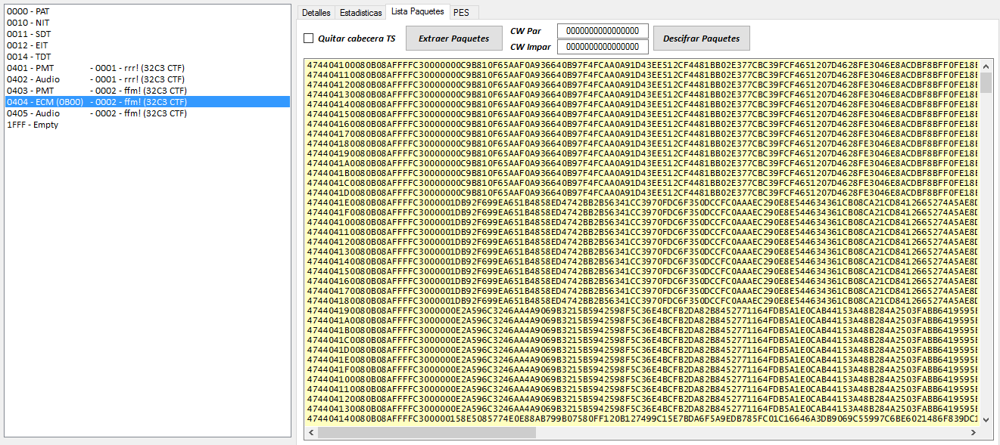
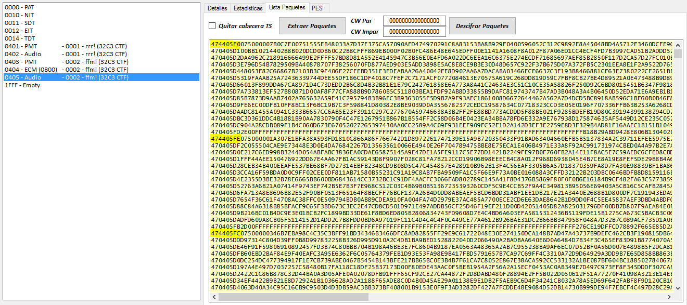
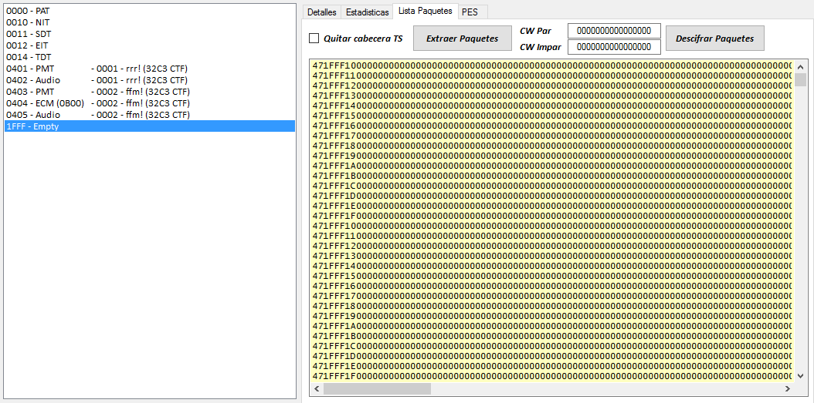
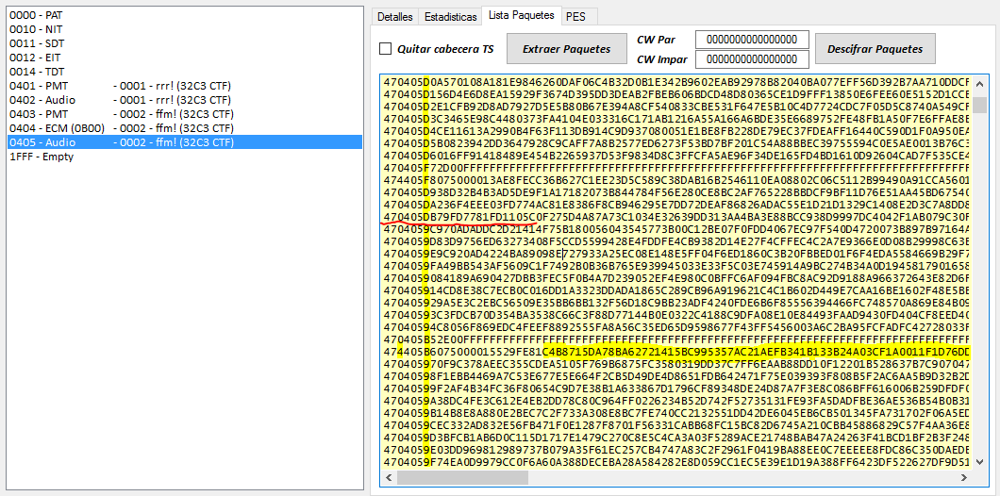
En el estandar DVB se utiliza el algoritmo CSA para cifrar los datos de audio y/o video. Generalmente las claves a utilizar con el algoritmo CSA (las llamaremos CW) se actualizan cada pocos segundos y se envían cifradas dentro de las ECMs (salvo en sistemas como BISS en el que se utiliza una clave fija y no se envían ECMs).
Para el reto, nos centraremos en los PID 0404 y 0405 en los que tenemos el audio cifrado y las ECMs para poder descifrarlo.
1.2 - Paquetes de Audio (0405)
Siguiendo el estandar DVB, la cabecera de los paquetes TS nos da cierta información. Vemos paquetes cifrados con la CW par y otros con la CW impar. Algunos tienen Adaptation Field y otros no. Además podemos ver en algunos paquetes el flag de inicio de la trama PES.
Algunos Ejemplos de cabeceras:
- 474405Fx -> SI Inicial, CW Impar, SI Adaptation Field
- 470405Fx -> NO Inicial, CW Impar, SI Adaptation Field
- 470405Dx -> NO Inicial, CW Impar, NO Adaptation Field
- 474405Bx -> SI Inicial, CW par, SI Adaptation Field
- 470405Bx -> NO Inicial, CW par, SI Adaptation Field
- 4704059x -> NO Inicial, CW par, NO Adaptation Field
Primer Paquete Inicial Cifrado con clave Impar
474405F0 075000007B0C7E00 751555EB48033A7D37E375CA57090AFD474970291C8A83153BA8B929F0400596052C312C9892E8A45048BD4A5712F3460DCFE9CC43C8981DAE5C11D40FF5ACC9263D90E247FE42987FB0C64A6D8060923D01FE5780654459AC02DD0537FD40729A0715983A449FC0E6601BD09FE67136D3F06AB88CD2D5F42D9F1572814E7A493EC48941F1E8E8CE94114EEC930F018DD0D4BA92481B6D0CCDA402BC5526810813C6A11FD033AE1EB61C2335F53DE22C
(Header) (Adaptation Field) (Data)
Primer Paquete Inicial Cifrado con clave Par
474405B6 075000015529FE81 C4B8715DA78BA62721415BC995357AC21AEFB341B133B24A03CF1A0011F1D76DDA2687334478AC41EE9F38AE71814C9BD96E3BEA2812F47DC898C078FD6D5CE949EEDDA243A0853CD60C819FB923F2E619879DCD3F4B7CF9132E66C883E03E28020CF910C06ABFF42E76F980A1FF17026D6A77E44B19EDF73A19108ABAF01FF17863A5B9E2C81F1B171B1604FE80CB416F4A154FA4463D34AE1779D9BE0B6CA8A5CE5EF202EB7927CD68AC853D71C8E3
(Header) (Adaptation Field) (Data)
1.3 - ECMs (0404)
80B08AFFFFC30000 00 0C9B810F65AAF0A936640B97F4FCAA0A91D43EE512CF4481BB02E377CBC39FCF4651207D4628FE3046E8ACDBF8BFF0FE18E2AC81943E9CE5E8814198497A6B0252DC04A06DFDA77A4FBBFC7E9D3DAA8A23DFD06E529D200AF56DE63421BED5BEB74B80BE4AA3C8D7F0C98B525B2552AD341C431985709C60B4C704200DF0D08E 227EE00D
80B08AFFFFC30000 01 DB92F699EA651B4858ED4742BB2B56341CC3970FDC6F350DCCFC0AAAEC290E8E544634361CB08CA21CD8412665274A5AE8D6C1F8232F9D3C2C222018111B469257846D2CAFBCA23528BFCF18DCEEA6B178E2BDF3C3796600FBACA9AC437C15537EDB957B989667EC7D564F6A214B41C43961054D7623A8F3AF68242B8B7A267F 25FB858B
80B08AFFFFC30000 00 E2A596C3246AA4A9069B3215B5942598F5C36E4BCFB2DA82B8452771164FDB5A1E0CAB44153A48B284A2503FABB6419595EBE11D099120C67301BDF98E16BFAB6ACB055586900FC62E60D83D1405445918285EB6ED2E7CF296A19F2F2DA6F03D37464AAD7809E9F244476C4C2E509EB69B3BA9227BB5DF9C6CDC5694BEE04B44 47745F68
80B08AFFFFC30000 01 58E5085774E0E88AB799B07580FF120B127499C15E7BDA6F5A9EDB785FC01C16646A3DB9069C55997C6BE6021486F839DC1C228142A80BF64802112A062385AF5C270BBE642AD786AA4C6496C92E16571A5D2906E0289B7E1E531837DF4ED9DEDC68FC1CA5AE7866CAF653EC949F5A679AD054A388F47DCEA2F4BBCFA83C94B3 93B95743
...
Vemos que las ECMs están formadas por
- Una cabecera (8 bytes). Siempre igual 80B08AFFFFC30000. Extrañamente su byte inicial no cambia entre 80 y 81 para marcar el cambio de ECM/CW
- Un flag (1 byte) que alterna entre 00 y 01. Ya que la cabecera no cambia ¿Será para indicar la CW a actualizar? Luego lo veremos...
- Datos aparenemtente cifrados (0x80 bytes)
- CRC? (4 bytes)
2 - Analisis del firmware de la tarjeta
El consejo nos muestra una foto de una tarjeta Funcard 4. Buscando información sobre esta tarjeta rápidamente encontraremos que tiene un procesador AT90S8515 y una eeprom AT24C256. Suficiente para comenzar a desensamblar y ver como funciona.
Nota: Sin el consejo, también deberíamos ser capaces de reconocer el procesador. Mirando el comienzo del firmware podemos ver xxC0xxC0xxC0xxC0 (13 veces xxC0). Parece una tabla con 13 saltos (una tabla de vectores de interrupción). Asi que, ¿que procesadores de los habitualmente usados en smartcards tiene la tabla de vectores en la posición 0000? ST...no, SLE...no, Texas... no, Motorola... no, ATMEL...si!! Podemos probar a desensamblar usando cualquier AVR y confirmar que funciona.
Datasheet AT90S8515
2.1 - Formato ECM
Analizando el desensamblado veremos que el formato de las ECMs debe ser el siguiente:
DD A2 00 00 F0 14 8E FE XX XX XX XX XX XX XX XX YY DATA...(0x80)...DATA ZZ ZZ ZZ ZZ
Cabecera:
- CLA = Debe ser DD
- INS = Para las ECMs será el A2 (Otros comandos en la tarjeta son 84, 26/C6, 82 y CA)
- P1 = Debe ser 00
- P2 = Debe ser 00
- LEN = Longitud del Cuerpo (en las ECMs debe ser > 3 y debería ser = F0)
Cuerpo:
- 14 = Byte fijo
- Longitud = Debe ser 8E y debe ser igual a LEN-2
- FE = Byte fijo
- 8 bytes = ? No usados
- 1 byte = Flag Par/Impar
- 0x80 bytes = Datos cifrados
- 4 bytes = CRC? No usados
Desensamblado:
ROM:02FC _cmdA2_ECM: ; CODE XREF: Main_Function:cmdA2
ROM:02FC lds r24, header4_LEN
ROM:02FE cpi r24, 3
ROM:02FF brcc cmdA2_lenOK
ROM:0300 rjmp send6700
ROM:0301
ROM:0301 cmdA2_lenOK: ; CODE XREF: Main_Function+188
ROM:0301 mov r16, r28
ROM:0302 mov r17, r29
ROM:0303 subi r16, -0x21
ROM:0304 sbci r17, -1
ROM:0305 mov r14, r28
ROM:0306 mov r15, r29
ROM:0307 ldi r27, 0x24
ROM:0308 add r14, r27
ROM:0309 adc r15, r1
ROM:030A
ROM:030A cmdA2_loopRead3: ; CODE XREF: Main_Function+19C
ROM:030A rcall sendACK_COM
ROM:030B rcall readByte
ROM:030C mov r30, r16
ROM:030D mov r31, r17
ROM:030E st Z+, r24
ROM:030F mov r16, r30
ROM:0310 mov r17, r31
ROM:0311 cp r30, r14
ROM:0312 cpc r31, r15
ROM:0313 brne cmdA2_loopRead3
ROM:0314 ldd r24, Y+0x21
ROM:0315 cpi r24, 0x14 ; 14
ROM:0316 breq loc_318
ROM:0317 rjmp send6700
ROM:0318
ROM:0318 loc_318: ; CODE XREF: Main_Function+19F
ROM:0318 ldd r20, Y+0x22
ROM:0319 mov r18, r20
ROM:031A ldi r19, 0
ROM:031B lds r24, header4_LEN
ROM:031D ldi r25, 0
ROM:031E sbiw r24, 2
ROM:031F cp r18, r24 ; header[4] - 2
ROM:0320 cpc r19, r25
ROM:0321 breq loc_323
ROM:0322 rjmp send6700
ROM:0323
ROM:0323 loc_323: ; CODE XREF: Main_Function+1AA
ROM:0323 cpi r20, 0x8E ; 8E
ROM:0324 breq loc_326
ROM:0325 rjmp send6700
ROM:0326
ROM:0326 loc_326: ; CODE XREF: Main_Function+1AD
ROM:0326 ldd r24, Y+0x23
ROM:0327 andi r24, 0xFD
ROM:0328 breq loc_32A
ROM:0329 rjmp send6700
ROM:032A
ROM:032A loc_32A: ; CODE XREF: Main_Function+1B1
ROM:032A ldi r17, 8
ROM:032B
ROM:032B cmdA2_loopRead8: ; CODE XREF: Main_Function+1B7
ROM:032B rcall sendACK_COM
ROM:032C rcall readByte
ROM:032D subi r17, 1 ; XX XX XX XX XX XX XX XX
ROM:032E brne cmdA2_loopRead8
ROM:032F rcall sendACK_COM
ROM:0330 rcall readByte ; YY (odd/even flag)
ROM:0331 mov r14, r24
ROM:0332 ldi r16, 0x76
ROM:0333 ldi r17, 0
ROM:0334
ROM:0334 cmdA2_loopRead80: ; CODE XREF: Main_Function+1C8
ROM:0334 ldi r27, 0
ROM:0335 cpi r16, 0xF6
ROM:0336 cpc r17, r27
ROM:0337 breq loc_340
ROM:0338 rcall sendACK_COM
ROM:0339 rcall readByte ; 0x80 DATA
ROM:033A mov r26, r16
ROM:033B mov r27, r17
ROM:033C st X+, r24 ; Store from 0076 to 00F5 (buffer)
ROM:033D mov r16, r26
ROM:033E mov r17, r27
ROM:033F rjmp cmdA2_loopRead80
ROM:0340 ; ---------------------------------------------------------------------------
ROM:0340
ROM:0340 loc_340: ; CODE XREF: Main_Function+1C0
ROM:0340 rcall sendACK_COM
ROM:0341 rcall readByte ; ZZ
ROM:0342 rcall sendACK_COM
ROM:0343 rcall readByte ; ZZ
ROM:0344 rcall sendACK_COM
ROM:0345 rcall readByte ; ZZ
ROM:0346 rcall sendACK_COM
ROM:0347 rcall readByte ; ZZ
Descargar desensamblado completo: firmware.lst
2.2 - Procesado CW
Una vez recibida la ECM la tarjeta calcula la CW de la siguiente forma:
- Se comienza con un seed conocido de 16 bytes (valores del 00 al 0F)
- Se realizan 0x100 permutaciones en este seed de acuerdo a los 0x80 bytes de la ECM (Conocidos) y a los 0x80 bytes de la eeprom (Desconocidos)
- Con los 8 primeros bytes del seed resultante y los bytes de la ECM se calcula la CW.
Desensamblado:
ROM:0330 rcall readByte ; YY (odd/even flag)
ROM:0331 mov r14, r24
ROM:0332 ldi r16, 0x76
ROM:0333 ldi r17, 0
ROM:0334
ROM:0334 cmdA2_loopRead80: ; CODE XREF: Main_Function+1C8
ROM:0334 ldi r27, 0
ROM:0335 cpi r16, 0xF6
ROM:0336 cpc r17, r27
ROM:0337 breq loc_340
ROM:0338 rcall sendACK_COM
ROM:0339 rcall readByte ; 0x80 DATA
ROM:033A mov r26, r16
ROM:033B mov r27, r17
ROM:033C st X+, r24 ; Store from 0076 to 00F5 (buffer)
ROM:033D mov r16, r26
ROM:033E mov r17, r27
ROM:033F rjmp cmdA2_loopRead80
...
...
ROM:034A ldi r20, 0x80 ; Len = 80
ROM:034B ldi r22, 0
ROM:034C ldi r23, 0 ; Src = 0000
ROM:034D ldi r24, 0xF6
ROM:034E ldi r25, 0 ; Dest = 00F6 (buffer + 0x80)
ROM:034F rcall Read_Eeprom
...
...
ROM:0353 loc_353: ; CODE XREF: Main_Function+1DA
ROM:0353 ldi r24, 0x60
ROM:0354 rcall sendByte
ROM:0355 mov r30, r28
ROM:0356 mov r31, r29
ROM:0357 adiw r30, 1 ; Zreg = Yreg+1 = seed
ROM:0358 ldi r24, 0 ; i=0
ROM:0359
ROM:0359 loopGenerateSeed: ; CODE XREF: Main_Function+1E5
ROM:0359 st Z+, r24 ; seed[i] = i
ROM:035A subi r24, -1 ; i++
ROM:035B cpi r24, 0x10
ROM:035C brne loopGenerateSeed
ROM:035D ldi r24, 0x60
ROM:035E rcall sendByte
ROM:035F mov r8, r1 ; i=0
ROM:0360
ROM:0360 loopMixSeed: ; CODE XREF: Main_Function+205
ROM:0360 ; Main_Function+20A
ROM:0360 mov r30, r8
ROM:0361 ldi r31, 0
ROM:0362 subi r30, -0x76
ROM:0363 sbci r31, -1
ROM:0364 ld r24, Z ; buffer[i]
ROM:0365 mov r25, r24
ROM:0366 swap r25
ROM:0367 andi r25, 0xF ; HN = (buffer[i] >> 4) & 0x0F
ROM:0368 ldi r26, 1
ROM:0369 ldi r27, 0
ROM:036A add r26, r28
ROM:036B adc r27, r29
ROM:036C add r26, r25
ROM:036D adc r27, r1
ROM:036E ld r25, X ; XX = seed[HN]
ROM:036F andi r24, 0xF ; LB = buffer[i] & 0x0F
ROM:0370 ldi r30, 1
ROM:0371 ldi r31, 0
ROM:0372 add r30, r28
ROM:0373 adc r31, r29
ROM:0374 add r30, r24
ROM:0375 adc r31, r1
ROM:0376 ld r24, Z ; YY = seed[LN]
ROM:0377 st X, r24 ; seed[LN] = XX
ROM:0378 st Z, r25 ; seed[HN] = YY
ROM:0379 inc r8 ; i++
ROM:037A mov r24, r8
ROM:037B andi r24, 0xF
ROM:037C brne loopMixSeed
ROM:037D tst r8
ROM:037E breq loc_382
ROM:037F ldi r24, 0x60
ROM:0380 rcall sendByte
ROM:0381 rjmp loopMixSeed
ROM:0382
ROM:0382 loc_382: ; CODE XREF: Main_Function+207
ROM:0382 mov r15, r1
ROM:0383 ldi r20, 3
ROM:0384
ROM:0384 loop_Prepare_offset_CW: ; CODE XREF: Main_Function+210
ROM:0384 lsl r14 ; offsetCW = OddEvenFlag << 3
ROM:0385 rol r15
ROM:0386 dec r20
ROM:0387 brne loop_Prepare_offset_CW
ROM:0388 ldi r30, 0x11
ROM:0389 ldi r31, 0
ROM:038A add r30, r28
ROM:038B adc r31, r29
ROM:038C add r14, r30
ROM:038D adc r15, r31 ; r14:r15 = Pointer to CW
ROM:038E ldi r16, 0
ROM:038F ldi r17, 0 ; r16:r17 = i = 0
ROM:0390 mov r7, r1
ROM:0391
ROM:0391 loopGenerateCW: ; CODE XREF: Main_Function+246
ROM:0391 mov r24, r16
ROM:0392 andi r24, 3
ROM:0393 cpi r24, 3 ; if (i & 3) == 3 (If is CW checksum Byte)
ROM:0394 breq loc_3B1
ROM:0395 ldi r24, 0x60
ROM:0396 rcall sendByte
ROM:0397 mov r26, r28
ROM:0398 mov r27, r29
ROM:0399 adiw r26, 1
ROM:039A ldi r18, 0
ROM:039B mov r24, r16
ROM:039C mov r25, r17
ROM:039D subi r24, -0x76
ROM:039E sbci r25, -1
ROM:039F
ROM:039F loopCalcCWByte: ; CODE XREF: Main_Function+235
ROM:039F ld r30, X+ ; seed[i]
ROM:03A0 ldi r31, 0
ROM:03A1 ldi r19, 3
ROM:03A2
ROM:03A2 loop: ; CODE XREF: Main_Function+22E
ROM:03A2 lsl r30 ; seed[i] >> 3
ROM:03A3 rol r31
ROM:03A4 dec r19
ROM:03A5 brne loop
ROM:03A6 add r30, r24 ; Pointer to buffer + i + (seed[i] >> 3) + i
ROM:03A7 adc r31, r25
ROM:03A8 ld r19, Z ; YY = buffer[i + (seed[i] >> 3)]
ROM:03A9 eor r18, r19 ; XX ^= YY
ROM:03AA cp r26, r10
ROM:03AB cpc r27, r11
ROM:03AC brne loopCalcCWByte
ROM:03AD mov r24, r18
ROM:03AE add r24, r7 ; temporal checksum
ROM:03AF mov r7, r18 ; r7 = Calculated Byte
ROM:03B0 rjmp StoreCWByte
ROM:03B1
ROM:03B1 loc_3B1: ; CODE XREF: Main_Function+21D
ROM:03B1 ldi r24, 0
ROM:03B2
ROM:03B2 StoreCWByte: ; CODE XREF: Main_Function+239
ROM:03B2 mov r30, r14
ROM:03B3 mov r31, r15
ROM:03B4 add r30, r16
ROM:03B5 adc r31, r17
ROM:03B6 st Z, r7 ; CW[i] = r7
ROM:03B7 subi r16, -1
ROM:03B8 sbci r17, -1 ; i++
ROM:03B9 cpi r16, 8
ROM:03BA cpc r17, r1
ROM:03BB breq endCW
ROM:03BC mov r7, r24 ; r7 = checksum
ROM:03BD rjmp loopGenerateCW
Descargar desensamblado completo: firmware.lst
Código C#:
byte[] buffer = new byte[0x100];
for (int i = 0; i < 0x80; i++) buffer[i] = ecmdata[i]; //Known
for (int i = 0; i < 0x80; i++) buffer[i + 0x80] = eepromData[i]; //Unknown
byte[] seed = {0x00, 0x01, 0x02, 0x03, 0x04, 0x05, 0x06, 0x07, 0x08, 0x09, 0x0A, 0x0B, 0x0C, 0x0D, 0x0E, 0x0F}
for (int i = 0; i < 0x100; i++)
{
int a = buffer[i] & 0x0F;
int b = buffer[i] >> 4;
byte tmp = seed[a];
seed[a] = seed[b];
seed[b] = tmp;
}
byte[] cw = new byte[8];
for (int i = 0; i < 8; i++)
{
if ((i % 4) != 3) //No checksum Byte
{
for (int j = 0; j < 8; j++) cw[i] ^= buffer[i + (seed[j] << 3)];
}
else //Checksum Byte
{
cw[i] = (byte)(cw[i - 1] + cw[i - 2] + cw[i - 3]);
}
}
2.3 - Analisis Debilidades
En este algoritmo podemos encontrar 3 debilidades que nos permitirán descifrar el stream sin conocer los datos de la eeprom de la tarjeta.
1° Vulnerabilidad
Para calcular una clave de 48 bits (+16 de checksums) está utilizando un seed de menor complejidad. En este caso 8 bytes de un grupo de 16 bytes conocidos, esto nos da
16!
--- = 16*15*14*13*12*11*10*9 = 518.918.400 = 0x1EEE1100 posibilidades
8!
Es una cantidad razonable para realizar bruteforce
2° Vulnerabilidad
Aunque la longitud de los datos de eeprom (clave desconocida) son 0x80 bytes. El algoritmo utilizado hace que tenga una complejidad equivalente a 8 bytes. Ya que permutar muchas veces los mismos datos no tiene sentido y lo único que importa es la posición final que se puede conseguir con tan solo 8 permutaciones.
3ª Vulnerabilidad
El algoritmo utilizado nos permite deducir la clave a partir de una CW. Haciendo bruteforce a una CW podremos calcular un contenido de eeprom válido para cualquier ECM.
3 - Descifrando el stream
3.1 - Bruteforce
1 - Cogemos la Primera ECM
80B0 8A FFFFC30000 00 0C9B810F65AAF0A936640B97F4FCAA0A91D43EE512CF4481BB02E377CBC39FCF4651207D4628FE3046E8ACDBF8BFF0FE18E2AC81943E9CE5E8814198497A6B0252DC04A06DFDA77A4FBBFC7E9D3DAA8A23DFD06E529D200AF56DE63421BED5BEB74B80BE4AA3C8D7F0C98B525B2552AD341C431985709C60B4C704200DF0D08E 227EE00D
2 - Es una ECM Par (el byte 8 es 00) asi que buscamos el primer inicio de audio cifrado con CW Par
474405B6 075000015529FE81 C4B8715DA78BA62721415BC995357AC21AEFB341B133B24A03CF1A0011F1D76DDA2687334478AC41EE9F38AE71814C9BD96E3BEA2812F47DC898C078FD6D5CE949EEDDA243A0853CD60C819FB923F2E619879DCD3F4B7CF9132E66C883E03E28020CF910C06ABFF42E76F980A1FF17026D6A77E44B19EDF73A19108ABAF01FF17863A5B9E2C81F1B171B1604FE80CB416F4A154FA4463D34AE1779D9BE0B6CA8A5CE5EF202EB7927CD68AC853D71C8E3
Por ser un inicio de una trama PES sabemos que los primeros bytes de de este paquete descifrado debe ser 00 00 01 C0 (mirando los paquetes de audio en claro del canal del PID 0401 podemos confirmar esto)... asi que ya tenemos lo necesario para realizar un bruteforce.
3 - Hacemos bruteforce del seed utilizando la primera ecm y el paquete de audio
byte[] encrypted_audio = {0xC4, 0xB8, 0x71, 0x5D, 0xA7, 0x8B, 0xA6, 0x27, 0x21, 0x41, 0x5B, 0xC9 }; //The first 12 bytes are enough to decrypt 4 bytes
byte[] ecmdata = {0x0C, 0x9B, 0x81, 0x0F, 0x65, 0xAA, 0xF0, 0xA9, 0x36, 0x64, 0x0B, 0x97, 0xF4, 0xFC, 0xAA, 0x0A, 0x91, 0xD4, 0x3E, 0xE5, 0x12, 0xCF, 0x44, 0x81, 0xBB, 0x02, 0xE3, 0x77, 0xCB, 0xC3, 0x9F, 0xCF, 0x46, 0x51, 0x20, 0x7D, 0x46, 0x28, 0xFE, 0x30, 0x46, 0xE8, 0xAC, 0xDB, 0xF8, 0xBF, 0xF0, 0xFE, 0x18, 0xE2, 0xAC, 0x81, 0x94, 0x3E, 0x9C, 0xE5, 0xE8, 0x81, 0x41, 0x98, 0x49, 0x7A, 0x6B, 0x02, 0x52, 0xDC, 0x04, 0xA0, 0x6D, 0xFD, 0xA7, 0x7A, 0x4F, 0xBB, 0xFC, 0x7E, 0x9D, 0x3D, 0xAA, 0x8A, 0x23, 0xDF, 0xD0, 0x6E, 0x52, 0x9D, 0x20, 0x0A, 0xF5, 0x6D, 0xE6, 0x34, 0x21, 0xBE, 0xD5, 0xBE, 0xB7, 0x4B, 0x80, 0xBE, 0x4A, 0xA3, 0xC8, 0xD7, 0xF0, 0xC9, 0x8B, 0x52, 0x5B, 0x25, 0x52, 0xAD, 0x34, 0x1C, 0x43, 0x19, 0x85, 0x70, 0x9C, 0x60, 0xB4, 0xC7, 0x04, 0x20, 0x0D, 0xF0, 0xD0, 0x8E};
byte[] decrypted_audio = new byte[4];
for (byte b1 = 0; b1 < 0x10; b1++)
{
for (byte b2 = 0; b2 < 0x10; b2++)
{
if (b1 == b2) continue;
for (byte b3 = 0; b3 < 0x10; b3++)
{
if ((b1 == b3) || (b2 == b3)) continue;
for (byte b4 = 0; b4 < 0x10; b4++)
{
if ((b1 == b4) || (b2 == b4) || (b3 == b4)) continue;
for (byte b5 = 0; b5 < 0x10; b5++)
{
if ((b1 == b5) || (b2 == b5) || (b3 == b5) || (b4 == b5)) continue;
for (byte b6 = 0; b6 < 0x10; b6++)
{
if ((b1 == b6) || (b2 == b6) || (b3 == b6) || (b4 == b6) || (b5 == b6)) continue;
for (byte b7 = 0; b7 < 0x10; b7++)
{
if ((b1 == b7) || (b2 == b7) || (b3 == b7) || (b4 == b7) || (b5 == b7) || (b6 == b7)) continue;
for (byte b8 = 0; b8 < 0x10; b8++)
{
if ((b1 == b8) || (b2 == b8) || (b3 == b8) || (b4 == b8) || (b5 == b8) || (b6 == b8) || (b7 == b8)) continue;
byte[] seed = { b1, b2, b3, b4, b5, b6, b7, b8 };
byte[] cw = new byte[8];
for (int i = 0; i < 8; i++)
{
if ((i % 4) != 3)
{
for (int j = 0; j < 8; j++) cw[i] ^= ecmdata[i + (seed[j] << 3)];
}
else
{
cw[i] = (byte)(cw[i - 1] + cw[i - 2] + cw[i - 3]);
}
}
CSA.decryptsoft(cw, encrypted_audio, decrypted_audio); //It's a standard CSA decryption but limited to first 4 bytes instead of the complete packet, to speed up the bruteforce
if ((res[0] == 0x00) && (res[1] == 0x00) && (res[2] == 0x01))
{
tresul.Text = "Bingo! CW=" + bytetostring(cw) + " Seed= " + bytetostring(seed) + " Audio=" + bytetostring(res);
return;
}
}
}
}
}
}
}
}
}
Y tras unos minutos... Bingo! CW=836219FE3C242989 Seed=02050607080B0C0F Audio=000001C0
4 - Comprobamos que efectivamente la CW funciona y descifra el paquete completo
000001C009D48080052100137109FFF5C2C4FFFFFFFFFFFFFFFFFFF52D35D4FDD556CA4A4BA8D55450FBB0BAFD775D7616E97577553494596D96D75D77DD6E195F85EB56E587AB9CCDC8056DE4FFA2A5B82C3D5A9ECF6989642CA21F195E132CDAEAC91BE01E80D7E955DB28E60910CF32AA697E029C957665BEA7D7D445AA0F4D22DF156D8F547DBCB396CE314F24F4DD069DB485CA66D18B1260F40DE7F569BDB13A8741DBEF41450B92A7636C5AB5
3.2 - Crear EEprom equivalente
5 - Sabemos el Seed resultante, asique podemos calcular una funcion equivalente a todas los intercambios que provocan los bytes de EEPROM
A-Calculamos el Seed tras las permutaciones producidos por el byte de la ECM
byte[] buffer = {0x0C, 0x9B, 0x81, 0x0F, 0x65, 0xAA, 0xF0, 0xA9, 0x36, 0x64, 0x0B, 0x97, 0xF4, 0xFC, 0xAA, 0x0A, 0x91, 0xD4, 0x3E, 0xE5, 0x12, 0xCF, 0x44, 0x81, 0xBB, 0x02, 0xE3, 0x77, 0xCB, 0xC3, 0x9F, 0xCF, 0x46, 0x51, 0x20, 0x7D, 0x46, 0x28, 0xFE, 0x30, 0x46, 0xE8, 0xAC, 0xDB, 0xF8, 0xBF, 0xF0, 0xFE, 0x18, 0xE2, 0xAC, 0x81, 0x94, 0x3E, 0x9C, 0xE5, 0xE8, 0x81, 0x41, 0x98, 0x49, 0x7A, 0x6B, 0x02, 0x52, 0xDC, 0x04, 0xA0, 0x6D, 0xFD, 0xA7, 0x7A, 0x4F, 0xBB, 0xFC, 0x7E, 0x9D, 0x3D, 0xAA, 0x8A, 0x23, 0xDF, 0xD0, 0x6E, 0x52, 0x9D, 0x20, 0x0A, 0xF5, 0x6D, 0xE6, 0x34, 0x21, 0xBE, 0xD5, 0xBE, 0xB7, 0x4B, 0x80, 0xBE, 0x4A, 0xA3, 0xC8, 0xD7, 0xF0, 0xC9, 0x8B, 0x52, 0x5B, 0x25, 0x52, 0xAD, 0x34, 0x1C, 0x43, 0x19, 0x85, 0x70, 0x9C, 0x60, 0xB4, 0xC7, 0x04, 0x20, 0x0D, 0xF0, 0xD0, 0x8E};
byte[] seed = {0x00, 0x01, 0x02, 0x03, 0x04, 0x05, 0x06, 0x07, 0x08, 0x09, 0x0A, 0x0B, 0x0C, 0x0D, 0x0E, 0x0F}
for (int i = 0; i < 0x80; i++)
{
int a = buffer[i] & 0x0F;
int b = buffer[i] >> 4;
byte tmp = seed[a];
seed[a] = seed[b];
seed[b] = tmp;
}
tresul.Text = "Seed después de las permutaciones de la ECM: " + bytetostring(seed);
-> Seed después de las permutaciones de la ECM: 0908030E0407020F0B000D0A01050C06
B-Vemos los 8 cambios equivalentes a los 0x80 de los bytes de EEPROM
- 1°Byte va a la posicion ??
- 2°Byte va a la posicion 04
- 3°Byte va a la posicion ??
- 4°Byte va a la posicion ??
- 5°Byte va a la posicion ??
- 6°Byte va a la posicion 03
- 7°Byte va a la posicion 00
- 8°Byte va a la posicion 07
- 9°Byte va a la posicion 05
- 10°Byte va a la posicion ??
- 11°Byte va a la posicion ??
- 12°Byte va a la posicion ??
- 13°Byte va a la posicion ??
- 14°Byte va a la posicion 01
- 15°Byte va a la posicion 06
- 16°Byte va a la posicion 02
byte[] equivalentMixingEEP = {6, 13, 15, 5, 1, 8, 14, 7};
6 - Probamos a calcular la CW sin BruteForce
byte[] buffer = {0x0C, 0x9B, 0x81, 0x0F, 0x65, 0xAA, 0xF0, 0xA9, 0x36, 0x64, 0x0B, 0x97, 0xF4, 0xFC, 0xAA, 0x0A, 0x91, 0xD4, 0x3E, 0xE5, 0x12, 0xCF, 0x44, 0x81, 0xBB, 0x02, 0xE3, 0x77, 0xCB, 0xC3, 0x9F, 0xCF, 0x46, 0x51, 0x20, 0x7D, 0x46, 0x28, 0xFE, 0x30, 0x46, 0xE8, 0xAC, 0xDB, 0xF8, 0xBF, 0xF0, 0xFE, 0x18, 0xE2, 0xAC, 0x81, 0x94, 0x3E, 0x9C, 0xE5, 0xE8, 0x81, 0x41, 0x98, 0x49, 0x7A, 0x6B, 0x02, 0x52, 0xDC, 0x04, 0xA0, 0x6D, 0xFD, 0xA7, 0x7A, 0x4F, 0xBB, 0xFC, 0x7E, 0x9D, 0x3D, 0xAA, 0x8A, 0x23, 0xDF, 0xD0, 0x6E, 0x52, 0x9D, 0x20, 0x0A, 0xF5, 0x6D, 0xE6, 0x34, 0x21, 0xBE, 0xD5, 0xBE, 0xB7, 0x4B, 0x80, 0xBE, 0x4A, 0xA3, 0xC8, 0xD7, 0xF0, 0xC9, 0x8B, 0x52, 0x5B, 0x25, 0x52, 0xAD, 0x34, 0x1C, 0x43, 0x19, 0x85, 0x70, 0x9C, 0x60, 0xB4, 0xC7, 0x04, 0x20, 0x0D, 0xF0, 0xD0, 0x8E};
byte[] seed = {0x00, 0x01, 0x02, 0x03, 0x04, 0x05, 0x06, 0x07, 0x08, 0x09, 0x0A, 0x0B, 0x0C, 0x0D, 0x0E, 0x0F}
for (int i = 0; i < 0x80; i++)
{
int a = buffer[i] & 0x0F;
int b = buffer[i] >> 4;
byte tmp = seed[a];
seed[a] = seed[b];
seed[b] = tmp;
}
byte[] finalSeed = new byte[8]; //We need only 8 bytes
for (int i = 0; i < 8; i++)
{
finalSeed[i] = seed[equivalentMixingEEP[i]];
}
byte[] cw = new byte[8];
for (int i = 0; i < 8; i++)
{
if ((i % 4) != 3)
{
for (int j = 0; j < 8; j++) cw[i] ^= buffer[i + (finalSeed[j] << 3)];
}
else
{
cw[i] = (byte)(cw[i - 1] + cw[i - 2] + cw[i - 3]);
}
}
tresul.Text = "CW: " + bytetostring(cw);
-> CW: 836219FE3C242989
3.3 - Descifrar Audio
6 - Sabiendo descifrar la ECM... podemos hacer una emu completa y descifrar el audio :)
private byte[] decryptECM(byte[] buffer)
{
byte[] seed = {0x00, 0x01, 0x02, 0x03, 0x04, 0x05, 0x06, 0x07, 0x08, 0x09, 0x0A, 0x0B, 0x0C, 0x0D, 0x0E, 0x0F}
for (int i = 0; i < 0x80; i++)
{
int a = buffer[i] & 0x0F;
int b = buffer[i] >> 4;
byte tmp = seed[a];
seed[a] = seed[b];
seed[b] = tmp;
}
byte[] finalSeed = new byte[8]; //We need only 8 bytes
for (int i = 0; i < 8; i++)
{
finalSeed[i] = seed[equivalentMixingEEP[i]];
}
byte[] cw = new byte[8];
for (int i = 0; i < 8; i++)
{
if ((i % 4) != 3)
{
for (int j = 0; j < 8; j++) cw[i] ^= buffer[i + (finalSeed[j] << 3)];
}
else
{
cw[i] = (byte)(cw[i - 1] + cw[i - 2] + cw[i - 3]);
}
}
return cw;
}
private byte[] getBytes(byte[] data, int offset, int len)
{
byte[] result = new byte[len];
for (int i = 0; i < len; i++) result[i] = data[offset + i];
return result;
}
private void decryptTS()
{
Stream instream = File.OpenRead("transponder.ts");
BinaryReader bufin = new BinaryReader(instream);
byte[] tsFile = new byte[instream.Length];
bufin.Read(tsFile, 0, tsFile.Length);
bufin.Close();
instream.Close();
FileStream stream = new FileStream("audio_decrypted.mpa", FileMode.Create, FileAccess.Write);
BinaryWriter writer = new BinaryWriter(stream);
bool writeResult = false;
byte flagECM = 0xFF;
byte[] cwEven = new byte[8];
byte[] cwOdd = new byte[8];
for (int pos = 0; pos < tsFile.Length; pos += 188)
{
byte[] ts = getBytes(tsFile, pos, 188);
ushort PID = (ushort)(((ts[1] << 8) + ts[2]) & 0x1FFF);
switch (PID)
{
case 0x0404: //ECM
{
if (ts[13] != flagECM)
{
flagECM = ts[13];
if (ts[13] == 0) cwEven = decryptECM(getBytes(ts, 14, 0x80));
else if (ts[13] == 1) cwOdd = decryptECM(getBytes(ts, 14, 0x80));
}
}
break;
case 0x0405: //Audio
{
int AFsize = 0;
if ((ts[3] & 0x20) > 0) //There is AF
{
AFsize = ts[4] + 1;
}
byte[] data = getBytes(ts, 4 + AFsize, 0xBC - 4 - AFsize);
byte[] result = new byte[data.Length];
if ((ts[3] & 0x40) == 0)
CSA.decrypt(cwEven, data, result);
else
CSA.decrypt(cwOdd, data, result);
if ((result[0] == 0x00) && (result[1] == 0x00) && (result[2] == 0x01) && (result[3] == 0xC0)) writeResult = true;
if (writeResult) //We wait the first initial packet decrypted correctly to write the result in the file
{
writer.Write(result);
}
}
break;
default:
//Ignore other PIDs
break;
}
}
writer.Close();
stream.Close();
}
3.4 - Flag
7 - Podemos escuchar el fichero audio_decrypted.mpa:
Descargar audio audio_decrypted.zip
Congratulations, the flag is 32C3_youre_listening_to_flagfm_radio

{kind=link}
{kind=link}
{kind=link}
{kind=link}
{kind=link}
{kind=link}
{kind=link}
{kind=link}
{kind=link}
{kind=link}
{kind=link}
{kind=link}